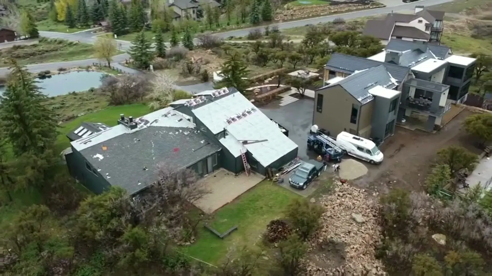

After a hail storm along the Wasatch Front, the question we hear first is simple: did it damage my roof? From the driveway, a roof often looks fine. The damage, if there is any, is in the shingles up close.
Here’s what hail does to a shingle roof, what you can check safely from the ground, and what to do next.
How big does hail have to be?
The National Weather Service uses everyday objects to describe hail size. Its Melbourne, Florida office publishes this scale (NWS: hail size):
| Category | Size |
|---|---|
| Non-severe | Pea (about 1/4″), marble (1/2″), dime, nickel or penny (about 3/4″) |
| Severe | Quarter (about 1″), half dollar (1 1/4″), walnut (1 1/2″), golf ball (1 3/4″) |
| Significant severe | Hen egg (2″), tennis ball (2 1/2″), baseball (2 3/4″) and larger |
A thunderstorm counts as severe when it produces hail at least the size of a quarter, 1 inch, or winds of 58 mph or more.
Smaller hail still matters
A study published in 2025 by researchers at the Insurance Institute for Business & Home Safety (IBHS) tested hail smaller than an inch on asphalt shingles. In a series of tests, the cumulative granule loss from those small impacts was greater than the granule loss from a single 2-inch hailstone (Insurance Journal, 2 October 2025). The researchers suggest that repeated small-hail storms may knock off enough granules to speed up the aging of a roof.
What hail damage looks like on shingles
IBHS, which rates shingles for hail resistance, describes the damage it measures as ranging from granule loss and dents to surface cracks and, at the worst, a fully compromised shingle (IBHS hail impact ratings). On a real roof, that looks like:
- Granule loss: dark spots where the gritty top layer has been knocked off, exposing the black asphalt underneath. Granules protect the asphalt from the sun.
- Dents and bruises: round marks where the shingle has been dented. Pressing on a bruise can feel soft compared with the shingle around it.
- Cracks and tears: splits in the shingle from a hard hit, which can let water through.
- Damage on the metal: dents in vents, flashing and drip edge on the roof.
Hail marks tend to be scattered randomly across the slopes that faced the storm. Wear from age is usually more even, which is one reason an inspection matters before deciding what the damage is.

Hail damage or normal aging?
Not every worn-looking shingle was hit by hail. Older roofs lose granules gradually, and shingles can blister, curl or crack with age and sun. The differences an inspector looks for:
- Pattern: hail hits are scattered and concentrated on the slopes that faced the storm; aging tends to show across the whole roof, often worst on the sunniest side.
- Shape: a hail mark is usually a roughly round spot or dent; age shows up as curling edges, cracking along the shingle or a generally thin, worn surface.
- Timing: damage that wasn’t there before a known storm, with dented metal and granules in the downspouts after it, points to hail.
That’s also why the cause matters for insurance: storm damage and wear from age are usually treated very differently by a policy.
What happens during a RoofWise inspection
It follows the same four steps as any RoofWise job: you schedule a time, a roofing professional inspects the roof for visible signs of damage, we explain what we found and, where it’s relevant, the roofing side of the insurance process, and if work is needed you get a clear plan for it.
What you can check from the ground
Don’t climb onto the roof. Instead, walk around the house and look for:
- Dents in gutters, downspouts, metal vents and window wraps
- Shingle granules collecting at the bottom of downspouts or in the gutters
- Pieces of shingle in the yard
- Dings in siding, window screens, fences and outdoor furniture
- New water stains on ceilings, especially upstairs
Photograph what you find and note the date of the storm.
What to do next
The Utah Insurance Department’s advice for home damage claims (insurance.utah.gov) is to contact your insurance company or agent as soon as possible, take photos or video of the damage, make temporary repairs to prevent more damage, and keep every receipt. It also says not to have permanent repairs made until the insurer has inspected the property and you’ve agreed on repair costs.
A roof inspection fits in at the start. RoofWise inspects the roof, documents visible damage and explains the findings, so you can decide whether an insurance conversation makes sense.
Insurance coverage and claim decisions are determined by your insurance policy and insurance carrier. Final coverage decisions are made by the insurance carrier according to the applicable policy.
Choosing shingles for next time
If you’re replacing a roof anyway, hail resistance is worth asking about. IBHS publishes ratings that compare how shingle products hold up to realistic hail impacts (IBHS hail impact ratings).
Had a storm in Salt Lake City or anywhere in Northern Utah? Schedule an inspection or call (435) 655-1246. More on how claims work on our insurance claims page.
Frequently asked questions
What size hail damages a roof?
The National Weather Service treats hail of 1 inch (quarter size) or larger as severe. Research from the Insurance Institute for Business & Home Safety suggests repeated smaller hail can wear shingles too, by knocking off granules over time (Insurance Journal).
Can you see hail damage from the ground?
Sometimes you can see clues: dents in gutters, downspouts and metal vents, and shingle granules collecting at the downspouts. The shingles themselves usually need a closer look by someone on the roof.
Should I climb on my roof to check for hail damage?
No. Check what you can safely from the ground and have a roofer inspect the roof itself.
Does homeowner’s insurance cover hail damage?
It depends on your policy. Insurance coverage and claim decisions are determined by your insurance policy and insurance carrier. Final coverage decisions are made by the insurance carrier according to the applicable policy.
Sources: National Weather Service (Melbourne, FL office): hail size and severe criteria · Insurance Journal, 2 October 2025: IBHS study on sub-severe hail (published in Frontiers in Materials) · IBHS: Hail Impact-Resistant Shingle Ratings · Utah Insurance Department: home claims information. Checked 17 October 2026.